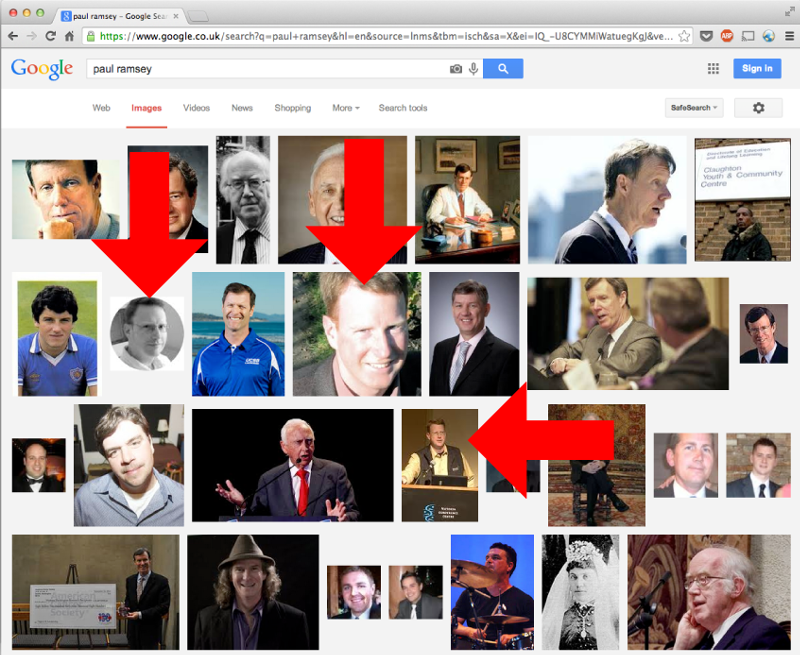
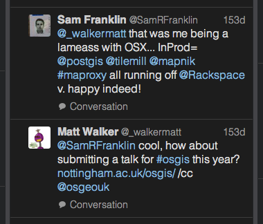

Greetings
"An open source geospatial implementation case study from the Energy sector"
about/me
Sam Franklin
GIS Manager @
@samfranklin
sam.franklin@lr-senergy.com
Why am I here
?

Be a good open source citizen

and goading

Open Source tech in an enterprise
web // deskop // what worked? // what failed?
why change?
the usual suspects...
>> Is this PDF the latest version?
>> No, I thought Bob emailed you?
>> Bob's on holiday
uh-oh...
real time data

licence frustration
I want one of those
and then...an opportunity

< 30 day deadline
Great, let's do this. What do we need?
 support custom CRS on web map
support custom CRS on web maplow initial investment cost
needed customisation ie dashboard
offshore status updates to webmap workflow
Why FOSS?
in house ArcGIS Server =! no time
arcgis online =! ASP licencing issue. Little customisation
google maps api =! custom CRS!
Open source=

gives you access to the ingredients
if you can cook
But, Open source also =
unsettling unknown unknowns

the wall of terror
But, we deployed a $30/pm hosted Apache + GeoServer instance
very capable mentoring from Astun Technology
starting educating myself about OSS and seeing what people could achieve
bingo = a working OSS stack for web client
"If you are not embarrassed by the first version of your product, you've launched too late."
--Reid Hoffman (LinkedIn co-founder)
and boy am I embarrased.
Minimal viable product
so we got a few more clients
built some momentum
hired a geospatial web developer. Yay! [Thank goodness]
2 years later...
version 2.1.7 of 'iris'
Rackspace Cloud on ArchLinux
client side = JQuery/Bootstrap + OpenLayers2
server side = PostGIS + Geoserver
bespoke marine planning tools
custom dashboards via Highcharts
multi-source realtime vessel tracking with history
UI-map-file explorer interaction
custom ROV video viewer
custom marine tilled basemapping
...using tilemill // mapnik xml // mapproxy = sweet.
guess what?
eyes wide open
overhauled DTM processing from arcpy/fledermaus to...
mighty GMT + GDAL
console processing = liberation
multi-node (office) with linux VMs per site with master-slave replication
deployed qgis via OSGEO4W to ~80 users
map production=ArcGIS to Inkscape for annotation
other tools in the box // ffmpeg // inkscape // GIMP // imagemagik
not a perfect world...
tilling UTM CAD pipeline data in EPSG:3857 = distortion
ED50 to WGS transform vigilence
+towgs84=-89.5,-93.8,-123.1,0,0,-0.156,1.2
days and days of my life. GONE
survey XYZ = no del values / problematic
what were the barriers?
what if everyone leaves?
is your source code controlled?
cultural - conservative + propritary software
why this culture?
Energy is big value
Potential big risk
Hazardous environment
path of least resistence
what worked?
start using GIT. At once!
issue tracking = OSTicket
cloud deployment
"Fail fast, fail often, fail forward” = this means test
browserstack + google form=user feedback
what failed?
QGIS implementation
do different?
technical stakeholders
make peace with geologists
what next?
fully roll out inhouse webmap = need search
vector tiles/topojson = mapbox is frankly lightyears ahead
GeoServer to mapserver, easier config/less overhead?
Fullstack JavaScript? NoSQL for application data, NodeJS replacing PHP
OpenLayers3 = w00t!
takeaways
"Do what you can, with what you have, where you are" - Theodore Roosevelt
presentation made with big by tom macwright